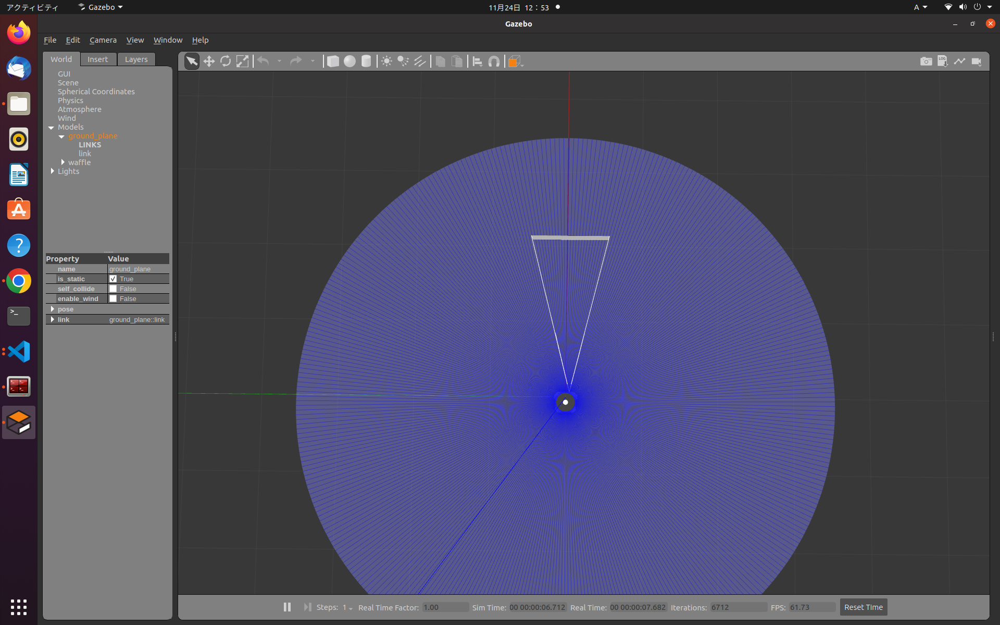
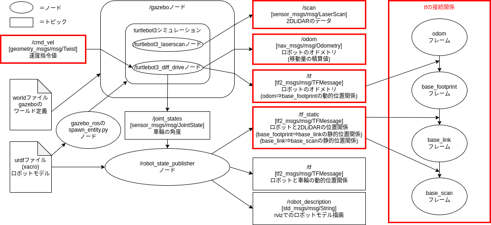

ROS2 Humble
実行するには各種インストール方法の③でROS2Humbleの環境を作るか、ROS2Galacticにして以下の出てくるhumbleを読み替えて実行してください。
Gazeboをlaunchで起動する
サンプルのlaunchファイルは、gazebo_rosパッケージ内にgzserver.launch.pyとgzclient.launch.pyがあります。
gzserverがワールドを立ち上げるので、worldファイルを読み込ませるのは、gzserverになります。
GUIが必要な場合は、gzclientを起動します。
gazebo_launch.py
上記のlaunchをまとめたlaunchは下記になります。
#!/usr/bin/env python3
# coding:utf-8
import os
from ament_index_python.packages import get_package_share_directory
from launch import LaunchDescription
from launch.actions import IncludeLaunchDescription
from launch.launch_description_sources import PythonLaunchDescriptionSource
def generate_launch_description():
pkg_gazebo_ros = get_package_share_directory('gazebo_ros')
world = os.path.join(
get_package_share_directory('my_nav2_bringup'),
'worlds',
'willowgarage.world'
)
gzserver_cmd = IncludeLaunchDescription(
PythonLaunchDescriptionSource(
os.path.join(pkg_gazebo_ros, 'launch', 'gzserver.launch.py')
),
launch_arguments={'world': world}.items()
)
gzclient_cmd = IncludeLaunchDescription(
PythonLaunchDescriptionSource(
os.path.join(pkg_gazebo_ros, 'launch', 'gzclient.launch.py')
)
)
ld = LaunchDescription()
ld.add_action(gzserver_cmd)
ld.add_action(gzclient_cmd)
return ld
4. ロボットをシミュレーションする(turtlebot3)

次にGazeboでロボットをシミュレーションしてみます。
- ROS2の自律走行メタパッケージ
navigation2(nav2)のチュートリアルではROBOTIS社のturtlebot3というロボットが使用されています。 - turtlebot3ではgazeboのモデルが用意されているためこれを使ってロボットをシミュレーションしてみましょう。
- turtlebot3には3種類のモデルがありますが、今回はwaffleを使用します。
Turtlebot3の関連サイト
turtlebot3のシミュレーション環境のインストール
# aptでturtlebot3のシミュレーションとnav2関連のインストール
sudo apt -y install ros-humble-gazebo-* ros-humble-cartographer ros-humble-cartographer-ros ros-humble-navigation2 ros-humble-nav2-bringup
sudo apt -y install ros-humble-dynamixel-sdk ros-humble-turtlebot3-msgs ros-humble-turtlebot3 ros-humble-turtlebot3-simulations
# ~/.bashrcにTURTLEBOT3の使用するモデルを選択する設定を追加(端末起動に読み込まれる)(burger,waffle,waffle_piから選択可能)
echo "export TURTLEBOT3_MODEL=waffle" >> ~/.bashrc
# ~/.bashrcにTURTLEBOT3のシミュレーションモデルをGazeboに読み込む設定を追加(端末起動に読み込まれる)
echo "export GAZEBO_MODEL_PATH=$GAZEBO_MODEL_PATH:/opt/ros/humble/share/turtlebot3_gazebo/models" >> ~/.bashrc
turtlebot3のシミュレーションの起動
- turtlebot3関連のパッケージはたくさんありますが、シミュレーションを行うパッケージは、
turtlebot3_gazeboになります。 -
Gazeboのworld環境は下記が用意されています。
- empty_world.world (何もない)
- turtlebot3_world.world (正六角形の中に1m間隔で9個の円柱)
- turtlebot3_house.world (模擬住宅環境)
- turtlebot3_dqn_stage1.world (5m四方の枠)
- turtlebot3_dqn_stage2.world (5m四方の枠と4個の円柱)
- turtlebot3_dqn_stage3.world (5m四方の枠と4個の円柱)
- turtlebot3_dqn_stage4.world (5m四方の枠内に壁が設置)
-
今回は
empty_world.worldを使用するため、launchコマンドでempty_world.launch.pyを呼び出します。 - Gazeboが起動し、turtlebot3のwaffleモデルが表示されます。
- turtlebot3のwaffleモデルは
/cmd_velトピックで動作する差動2輪駆動型のロボットになるため、筐体の横に円柱のタイヤが2個ついています。 - 青い円のように見えているものがLaserScanシミュレーション、白い三角柱のように見えているものがカメラシミュレーションになります。


turtlebot3_gazeboのempty_world.launch.pyの詳細
empty_world.launch.pyでは、gzserver,gzclientの他に以下の2個のlaunchファイルを呼び出し、2個のノードを起動しています。robot_state_publisher.launch.py- パッケージ名:
robot_state_publisher - ノード名:
robot_state_publisher - urdfファイル読込、静的位置関係の
/tf_staticトピックとrviz上にロボットモデルを表示するための/robot_descriptionトピックを出力 /joint_statesトピック(今回はタイヤの回転状態)をサブスクライブし動的位置関係の/tfトピックを出力- urdfファイルパス:
/opt/ros/humble/share/turtlebot3_gazebo/urdf/turtlebot3_waffle.urdf
- パッケージ名:
spawn_turtlebot3.launch.py- パッケージ名:
gazebo - ノード名:
spawn_entity.py - sdfファイル(urdfファイル)を読込、gazebo上にturtlebot3のwaffleモデルを配置し、ノードを終了
- sdfファイルパス:
/opt/ros/humble/share/turtlebot3_gazebo/models/turtlebot3_waffle/model.sdf
- パッケージ名:
- turtlebot3のwaffleモデルには、筐体モデルの他に差動2輪制御コントローラや複数のセンサシミュレーションのgazebo_pluginsが記述され、ROS2ノードとして動作しています。(
ros2 node listで確認できます) - 差動2輪制御コントローラ
- ノード名:
/turtlebot3_diff_drive - gazeboプラグイン名:
libgazebo_ros_diff_drive.so
- ノード名:
- 車輪の回転状態シミュレーション
- ノード名:
/turtlebot3_joint_state - gazeboプラグイン名:
libgazebo_ros_joint_state_publisher.so
- ノード名:
- 2DLiDARシミュレーション
- ノード名:
/turtlebot3_laserscan - gazeboプラグイン名:
libgazebo_ros_ray_sensor.so
- ノード名:
- カメラシミュレーション
- ノード名:
/camera_driver - gazeboプラグイン名:
libgazebo_ros_camera.so
- ノード名:
- IMUシミュレーション
- ノード名:
/turtlebot3_imu - gazeboプラグイン名:
libgazebo_ros_imu_sensor.so
- ノード名:
- gazeboプラグインの種類に関してはgazeboのチュートリアルページやgazebo_pluginsのgithubの実装で確認できます。
- gazeboのチュートリアルページ
- gazebo_ros_pkgsのgazebo_plugins
turtlebot3のシミュレーションのノード構成
現在の状態は下記の図のようになります。(講習会ではあまり使用しないためカメラとIMUのシミュレーションは図から省略しています)

- 図の赤枠部分が自律走行を行っていく上で重要な部分になります。
- 入力部分(サブスクライバ)は
/cmd_velトピックとなっているため、【1章】で行った速度指令値出力で動かすことができます。
# ros2 topic pubコマンドの場合
ros2 topic pub --once /cmd_vel geometry_msgs/msg/Twist "{linear: {x: 0.25, y: 0.0, z: 0.0}, angular: {x: 0.0, y: 0.0, z: 0.5}}"
# teleop_twist_keyboardの場合
ros2 run teleop_twist_keyboard teleop_twist_keyboard
# joy + teleop_twist_joyの場合
ros2 run joy joy_node
ros2 run teleop_twist_joy teleop_node